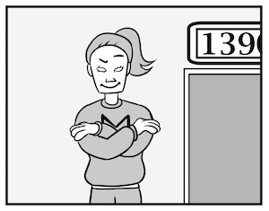
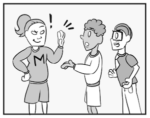
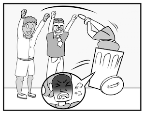

B-2: KONTROLLZWANG
Diese sportliche junge Frau heißt Maroona. Sie studiert Kinesiologie im dritten Semester und ist ein mega Fan von Maroons! Maroona joggt, boxt, macht Crossfit und spielt Fußball, Baseball und Eishockey.

Maroona arbeitet in einem Restaurant auf dem Campus. Das Restaurant heißt Dreizehn-Neunzig. Heute gibt es Speed-dating in Dreizehn-Neunzig. Maroona ist die Türsteherin: sie steht an der Tür und kontrolliert: wer kommt rein und wer nicht.
Hier kommen zwei Freunde, Siegfried und Wolfgang. Sie wollen reingehen, aber Maroona steht da und sagt: “Halt!”.
“Warum nicht? Wir wollen auch beim Speed-Dating mitmachen!” antworten Siegfried und Wolfgang.
Maroona sagt: “Dann springt auf einem Fuß!”
“Bist du dumm oder was?”, antworten Siegfried und Wolfgang. Sie denken, dass Maroona komisch ist, aber sie wollen rein und springen auf einem Fuß.
“ Jetzt schwimmt auf dem Fußboden! Schwimmt zu Sternbocks und zurück!” sagt Maroona. Siegfried und Wolfgang sind verärgert, aber sie wollen bei Speed-Dating mitmachen und schwimmen auf dem Fußboden zu Sternbocks und zurück. Andere Studenten sehen das und lachen. Sie fragen: “Was macht ihr da? Warum schwimmt ihr auf dem Fußboden?”
“Und jetzt…” sagt Maroona, aber Siegfried und Wolfgang nehmen sie und werfen sie in eine Mülltonne. “Ruckzuck!” (boom!) sagen sie und gehen rein.